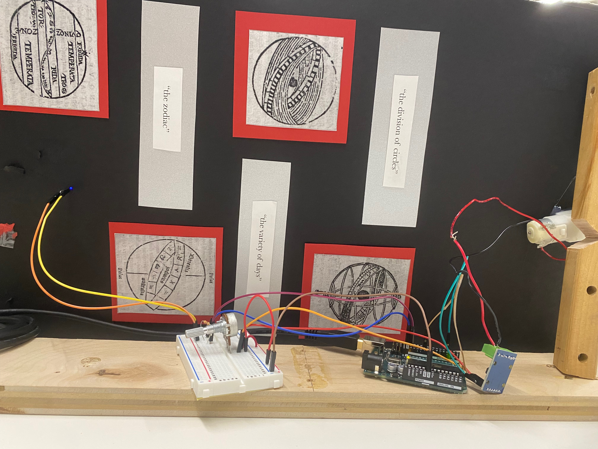
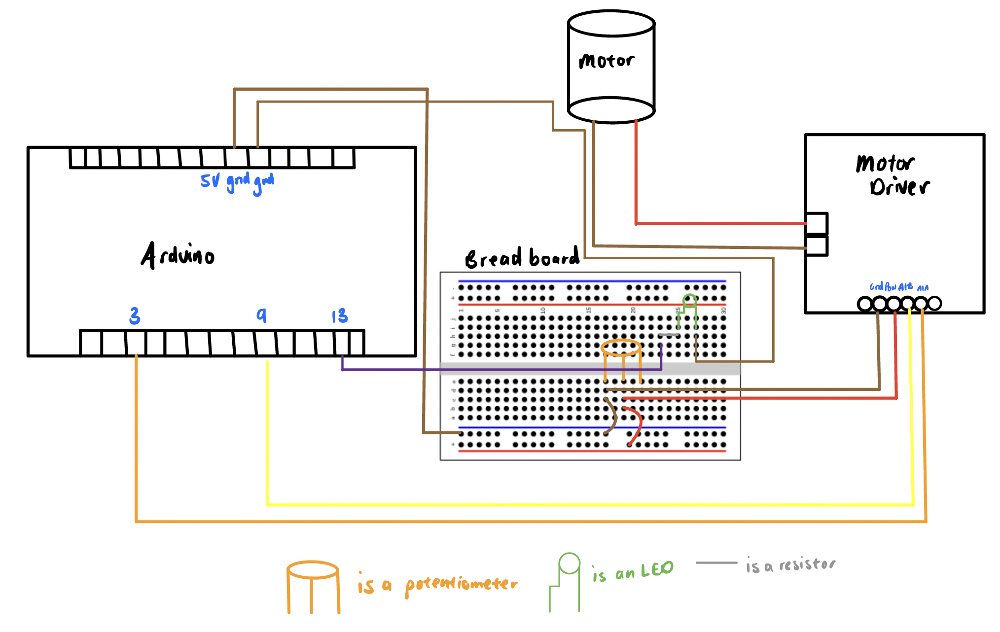

Hands, hands, hands (pt.2)

Materials
- Arduino Uno
- Wires
- Breadboard
- Blue LED
- The Internet
Introduction
I really wanted to build upon my project from last week. I didn't want to just have the Arduino spin the motor, so decided to incorporate an LED into the project (thanks Kassia for the idea!) The illusion is that the blue LED turns on when the hands "touch."
The Process
I started first by rigging the motor driver to the arduino, to the breadboard, so that I would be able to use a potentiometer to control the voltage. The motor was controlled by pins 3 and 9, and the LED was controlled by pin 13. I reflect this in my Arduino code. The setup for the circuit is shown below!
I will also add a schematic below, so it is easier to see what is going on between the Arduino Uno, the DC Motor, the Motor Driver, and the breadboard (with potentiometer, LED, and resistor elements).
For the code, I opted to build upon the servo code from Arduino, as well as the blink code, provided I aim to incorporate both into my final project. I timed how long it took for the "wheel" to make a full rotation, and it was about 1.3 seconds. This meant that the total "delay" across my code had to be roughly 1.3 seconds. This came out to be roughly true (.8 seconds + .8 seconds + 1.3ms). Please see the code below.
#include
Servo myservo; // create servo object to control a servo
// twelve servo objects can be created on most boards
int pos = 0; // variable to store the servo position
void setup() {
myservo.attach(9); // attaches the servo on pin 9 to the servo object
pinMode(13, OUTPUT); // initialize digital pin 13 as output
}
void loop() {
for (pos = 0; pos <= 180; pos += 1) { // goes from 0 degrees to 180 degrees
// in steps of 1 degree
myservo.write(pos); // tell servo to go to position in variable 'pos'
delay(1.4); // waits 1.4 ms for the servo to reach the position
}
// for (pos = 180; pos >= 0; pos -= 1) { // goes from 180 degrees to 0 degrees
// myservo.write(pos); // tell servo to go to position in variable 'pos'
// delay(15); // waits 15 ms for the servo to reach the position
// }
digitalWrite(13, HIGH); // turn the blue LED on (HIGH is the voltage level)
delay(800); // wait for .8 seconds
digitalWrite(13, LOW); // turn the LED off by making the voltage LOW
delay(800); // wait for .8 second
}
I ultimately put the setup behind the board. In reality, the design gives the illusion that when the hands "touch," that the blue LED lights up. In reality, in the Arduino code, I (almost) perfectly timed it so that it just gave the illusion. In future iterations, I hope to use a sensor to complete the circuit, so that the lightbulb actually turns on when the "hands" touch!
Future Iterations
If I were to build on this project in the future, I would "fix" the periodicity at which the blue LED goes off, which I believe will be better once I use the servo motor with the servo Arduino code. Also, creating a nicer setup for the project would be nice!